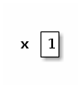
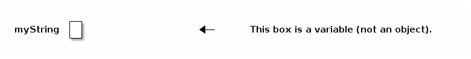
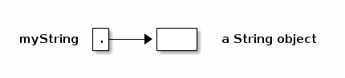
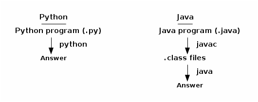
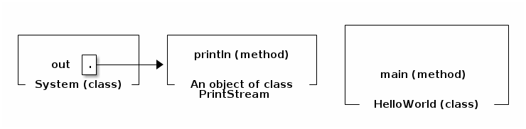

notes1
Table of Contents
Lecture 1
Prof. Jonathan Shewchuk, jrs@cory.eecs Email to prof & all TAs at once (preferred): cs61b@cory.eecs
Today's reading: Sierra & Bates, pp. 1-9, 18-19, 84. Handout: Course Overview (also available from CS 61B Web page)
Also, read the CS 61B Web page as soon as possible! >>> http://www.cs.berkeley.edu/~jrs/61b <<< YOU are responsible for keeping up with readings & assignments. Few reminders. The Piazza board is required reading: https://piazza.com/berkeley/spring2014/cs61b
Labs
Labs (in 271, 273, 275, 330 Soda) start Thursday. Discussion sections start Monday. You must attend your scheduled lab (as assigned by Telebears) to
- get an account (needed for Lab 1 and Homework 1), and
- login to turn on your ability to turn in homework (takes up to 24 hours).
You may only attend the lab in which you are officially enrolled. If you are not enrolled in a lab (on the waiting list or in concurrent enrollment), you must attend a lab that has space. (Show up and ask the TA if there's room for you.)
You will not be enrolled in the course until you are enrolled in a lab. If you're on the waiting list and the lab you want is full, you can change to one that isn't, or you can stay on the waitlist and hope somebody drops.
If you're not yet enrolled in a lab, just keep going to them until you find one that has room for you (that week). Once you get enrolled in a lab, though, please always attend the one you're enrolled in.
Prerequisites
Ideally, you have taken CS 61A or E 7, or at least you're taking one of them this semester. If not, you might get away with it, but if you have not mastered recursion, expect to have a very hard time in this class. If you've taken a data structures course before, you might be able to skip CS 61B. See the Course Overview and Brian Harvey (781 Soda) for details.
Textbooks
Kathy Sierra and Bert Bates, Head First Java, Second Edition, O'Reilly, 2005. ISBN # 0-596-00920-8. (The first edition is just as good.)
Michael T. Goodrich and Roberto Tamassia, Data Structures and Algorithms in Java, Fifth Edition, John Wiley & Sons, 2010. ISBN # 0-470-38326-7. (The first/third/fourth/sixth edition is just as good, but not the second.)
We will use Sierra/Bates for the first month. Lay your hands on a copy as soon as possible.
Buy the CS 61B class reader at Vick Copy, 1879 Euclid. The bulk of the reader is old CS 61B exams, which will not be provided online. The front of the reader is stuff you'll want to have handy when you're in lab, hacking.
Grading
| 10 pts | Labs | There are 200 points total you can earn in this course, |
| 20 pts | Homeworks | broken down at left. 185+ points is an A+, 175-184 is |
| 70 pts | Projects | an A, and so on down to D- (85-94). There is NO CURVE. |
| 25 pts | Midterm I | Late homeworks and labs will NOT be accepted, period. |
| 25 pts | Midterm II | Late projects are penalized 1% of your score for every |
| 50 pts | Final Exam | two hours by which you miss the deadline. |
| 200 pts |
There will be three projects, worth 20, 30, and 20 points respectively. You will do the first project individually, and the last two as part of a group of two or three students. You may not work alone on the last two projects. All homeworks and projects will be turned in electronically.
Cheating
…will be reported to the Office of Student Conduct.
- "No Code Rule": Never have a copy of someone else's program in your possession and never give your program to someone else.
- Discussing an assignment without sharing any code is generally okay. Helping someone to interpret a compiler error message is an example of permissible collaboration. However, if you get a significant idea from someone, acknowledge them in your assignment.
- These rules apply to homeworks and projects. No discussion whatsoever in exams, of course.
- In group projects, you share code freely within your team, but not between teams.
Goals of CS 61B
- Learning efficient data structures and algorithms that use them.
- Designing and writing large programs.
- Understanding and designing data abstraction and interfaces.
- Learning Java.
THE LANGUAGE OF OBJECT-ORIENTED PROGRAMMING
Object: An object is a repository of data. For example, if MyList is a ShoppingList object, MyList might record your shopping list.
Class: A class is a type of object. Many objects of the same class might exist; for instance, MyList and YourList may both be ShoppingList objects.
Method: A procedure or function that operates on an object or a class. A method is associated with a particular class. For instance, addItem might be a method that adds an item to any ShoppingList object. Sometimes a method is associated with a family of classes. For instance, addItem might operate on any List, of which a ShoppingList is just one type.
Inheritance: A class may inherit properties from a more general class. For example, the ShoppingList class inherits from the List class the property of storing a sequence of items.
Polymorphism: The ability to have one method call work on several different classes of objects, even if those classes need different implementations of the method call. For example, one line of code might be able to call the "addItem" method on every kind of List, even though adding an item to a ShoppingList is completely different from adding an item to a ShoppingCart.
Object-Oriented: Each object knows its own class and which methods manipulate objects in that class. Each ShoppingList and each ShoppingCart knows which implementation of addItem applies to it.
In this list, the one thing that truly distinguishes object-oriented languages from procedural languages (C, Fortran, Basic, Pascal) is polymorphism.
Java
Java allows you to store data in variables, but first you must declare them and specify their type.
Python: x = 1 Scheme: (let ((x 1)) ) Java: int x; x = 1;
This Java declaration does two things.
- It allocates a chunk of memory big enough to store an integer, which Java calls type "int".
- It names the variable (chunk of memory) "x".

Variables are used not just to store numbers, but also to reference objects. There are two ways to get classes of objects to play with:
- Use one defined by somebody else. Java has tons of pre-defined classes you can use. Many come in the "Java standard library" provided with every Java compiler.
- Define your own.
For example, Java has a built-in class called String.
String myString;
This does not create a String object. Instead, it declares a variable (chunk of memory) that can store a reference to a String object. I draw it as a box.

Initially, myString doesn't reference anything. You can make it reference a String object by writing an assignment statement. But how do we get ahold of an actual String object? You can create one.
myString = new String();
This line performs two distinct steps. First, the phrase "new String()" is called a constructor. It constructs a brand new String object. Second, the assignment "=" causes myString to reference the object. You can think of this as myString pointing to the object.

Unlike Scheme and Python, Java programs must be compiled before you can run them. Compilation converts your written code to a machine-readable bytecode. The advantage is a faster program than one written in Scheme. The disadvantage is that you have to wait for it to compile.

Postscript: Anatomy of a Small Java Program (for discussion section)
Assume the following code is in a file called HelloWorld.java:
class HelloWorld { public static void main (String[] args) { System.out.println("Hello, world"); } }
The classes are "HelloWorld", "String", and "System". The objects are "args", "System.out", and the string "Hello, world". (Actually, the first two of these are references to objects.) The methods are "main" and "println". The println method prints its parameter, and the main method prints the string "Hello, world".
You don't have the knowledge to completely understand this code yet, but don't worry about it. We'll take the first two lines on faith as the standard way to start a Java program. They'll become clear in the coming weeks.
Let's look at the innermost line first; it does all the action. "out" references an object whose class is PrintStream. A PrintStream is a path by which characters can be output by a program. The characters that are sent through "out" find their way to your computer screen.
System is a class which happens to contain the variable out (among many other variables). We have to write "System.out" to address the output stream, because other classes might have variables called "out" too, with their own meanings.
"println" is a method (procedure) of the class PrintStream. Hence, we can invoke "println" from any PrintStream object, including System.out. "println" takes one parameter, which can be a string.
"main" is a method in the "HelloWorld" class. The HelloWorld class knows how to do the "main" operation, just like the PrintStream class knows how to do the "println" operation.

The classes System and PrintStream are all automatically provided for you by any Java compiler. Somebody has programmed them for you, so that you don't have to figure out for yourself how to send characters to the terminal.